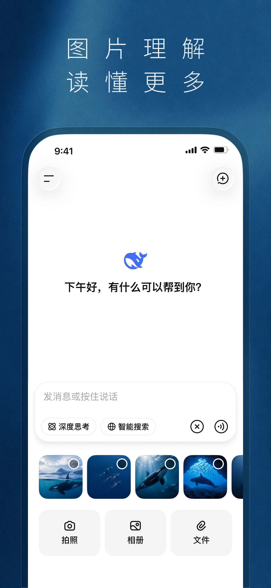

N0 / 参考
锁定真机基线
记录版本与设置，采集 12 类状态和操作录屏，建立语音基线。
在 iPhone 15 Pro 上，复现快速准确的语音、流畅的聊天与细致的视觉交互；让每次请求通过 Tailscale 到达你当前 Mac 的 dsh。
对着手机说出需求，迅速得到准确文字，
发给自己的 Mac，并实时读到回复。
先用这一条完整路径验证语音与连接。随后逐屏修正布局、录音、键盘、历史和动画，完成第一阶段对齐，再讨论本地开发工作台的升级。
dsh 负责会话与执行。把声音变成文字，需要单独的识别引擎。先在 iPhone 15 Pro 评测 Apple 设备端转写；未达标时，再比较经 Tailscale 到 Mac 的方案。
这些是初始预算，尚无实测成绩。p95 指 95% 的样本不超过这个时间。正式预算在真机基线采集后记录；冷启动、文字修改量和失败率单独报告。
录音入口、按住或点击、松手、取消、编辑和发送，均以手机上实际安装的 DeepSeek 为准。麦克风拒绝、电话打断或识别失败时保留草稿，并显示具体反馈。
记录版本与设置，采集 12 类状态和操作录屏，建立语音基线。
鉴权、发送、增量、停止与重连；手机和 Mac 核对同一会话。
让语音进入真实对话，完成 30 条成对样本与引擎选择。
首页、历史、输入、录音、消息、附件和菜单逐项落地。
叠图、动画、网络切换、失败恢复与日常对话共同验收。
| 维度 | 检查内容 | 通过依据 |
|---|---|---|
| 画面 | 欢迎、键盘、录音、转写、生成中、完成、历史、菜单、深浅色、失败态。 | 同设备、同内容、同设置叠图；关键几何差异初始目标 ≤ 1 pt。品牌替换区域单列。 |
| 动作 | 输入、抽屉、键盘联动、录音手势、滚动与自动折叠。 | 同机录屏和触感对照；触摸反馈 p95 初始目标 ≤ 100 ms，关键动画时长差异 ≤ 10%。 |
| 真实会话 | 增量输出、停止、历史切换、重命名、草稿、附件和必要工具反馈。 | 客户端显示与服务端事件一致；未解决的能力差距逐项保留。 |
| 离家使用 | 蜂窝网络 + Tailscale；Wi-Fi 切换、后台、401、dsh 重启。 | 恢复历史后再接续；没有重复发送、串会话或草稿丢失。 |
| 日常感受 | 至少 10 轮文字 / 语音混合对话、3 个历史、1 次停止和断线恢复。 | Benjamin 在自己的 iPhone 15 Pro 认可体验；主观差异对应具体场景记录。 |
完整的 A1–A12 检查、失败行为与证据要求见 实施计划第 7 节。所有数值均为待校准预算。
安装包定义了会话列表、搜索、重命名、发送、停止、历史和实时流。通信使用 HTTP RPC 与 WebSocket；鉴权依赖绑定 host 和 port 的 cookie。启动器报告 0.1.5-rc.1，相关磁盘包为 0.1.5-rc.2，运行时协议仍需核对。
当前 session namespace 未列出删除方法；模型 / 工作目录选择按设计批注替换原开关，切换语义仍需真机验证。未解决的功能不使用空按钮代替。

仓库有昨天保留的官方营销素材。这类图片能参考视觉结构，真机排版、录音、键盘、安全区和动画仍需实测。
本轮打开的 App Store 页面显示 2.5.1；用户手机的实际安装版本尚未确认。
第一步需要记录 iPhone 的系统版本、DeepSeek 版本、字号、语言与主题，并采集实际操作。
项目看板、Git diff、终端、多机器调度、完整审批中心、多 Agent 工作台和四端同步，留到本阶段验收之后。本机工具所需的最小等待 / 授权反馈纳入本次会话闭环。
本轮已创建分支并完成规划。语音主流程已完成真机采样并更新设计；产品代码、语音质量评测和产品安装验收尚未执行。